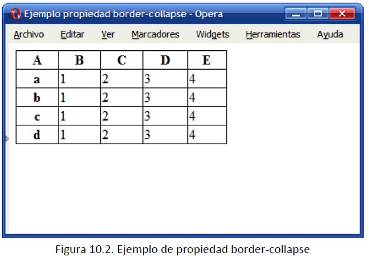

Tabla básica:
| A | B | C | D | E |
| a | 1 | 2 | 3 | 4 |
| b | 1 | 2 | 3 | 4 |
| c | 1 | 2 | 3 | 4 |
| d | 1 | 2 | 3 | 4 |
Border-collapse: Define el mecanismo de fusión de los bordes de las celdas adyacentes de una tabla.
Valores: inherit | separate | collapse.
El modelo collapse fusiona de forma automática los bordes de las celdas adyacentes, mientras que el modelo separate fuerza a
que cada celda muestre sus cuatro bordes. Por defecto, los navegadores utilizan el modelo separate.
Aunque parece sencillo, el mecanismo que utiliza el modelo collapse es muy complejo, ya que cuando los bordes que se fusionan
no son exactamente iguales, debe tener en cuenta la anchura de cada borde, su estilo y el tipo de celda que contiene el borde
(columna, fila, grupo de filas, grupo de columnas) para determinar la prioridad de cada borde.

Border-spacing: Establece la separación entre los bordes de las celdas adyacentes de una tabla.
Valores: medida medida | inherit.
Si solamente se indica como valor una medida, se asigna ese valor como separación horizontal y vertical. Si se indican dos
medidas, la primera es la separación horizontal y la segunda es la separación vertical entre celdas. La propiedad
border-spacing sólo controla la separación entre celdas y por tanto, no se puede utilizar para modificar el tipo de modelo de
bordes que se utiliza.
En la tabla del ejemplo, se ha establecido la propiedad border-spacing: 0, por lo que el navegador no introduce ninguna
separación entre los bordes de las celdas. Además, como no se ha establecido de forma explícita ningún modelo de bordes, el
navegador utiliza el modelo separate.
Empty-cells: Define el mecanismo utilizado para el tratamiento de las celdas vacías de una tabla. Esta propiedad
sólo se aplica cuando el modelo de bordes de la tabla es de tipo separate.
Valores: show | hide | inherit.
El valor hide indica que las celdas vacías no se deben mostrar. Una celda vacía es aquella que no tiene ningún contenido.
Por ejemplo:
Caption-side: Establece la posición del título de la tabla.
Valores: top | bottom | inherit.
El valor bottom indica que el título de la tabla se debe mostrar después de los contenidos de la tabla. La alineación
horizontal se controla mediante la propiedad text-align.
| 2 | 3 | |
| 4 | 6 | |
| 7 | 8 |